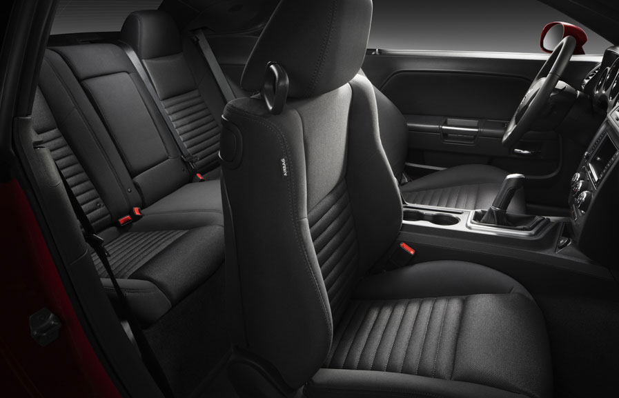

The Dodge Challenger is an amazing car.
It's very fast and is mostly famous for it's use in the Fast and the Furious movies.
The car can be purchased with different variation for it, the most common variation is the engine popping up on the hood of the car.
The Dodge Challenger isn't a vehicle you want if you are going be driving friends or family places.
The car can seat five but the back three seats have absolutely no space for leg room.
The car practically seats two but it is an excellent car to for getting looks by from people.

It's definitely not my first or second choice due to the space for people you can have in the car.
However it could be your perfect car if you dont really drive friends or family around.
Overall its a good car but the other cars are better in my opinon.